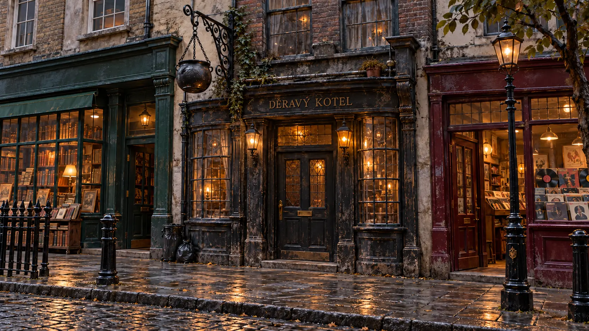
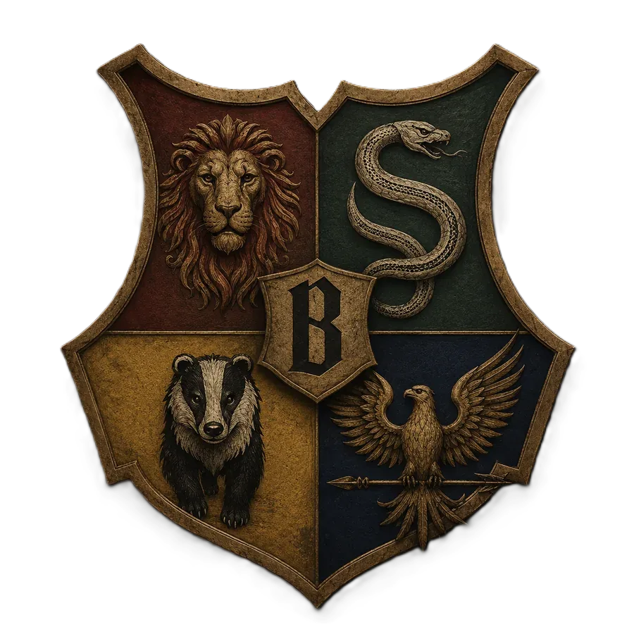
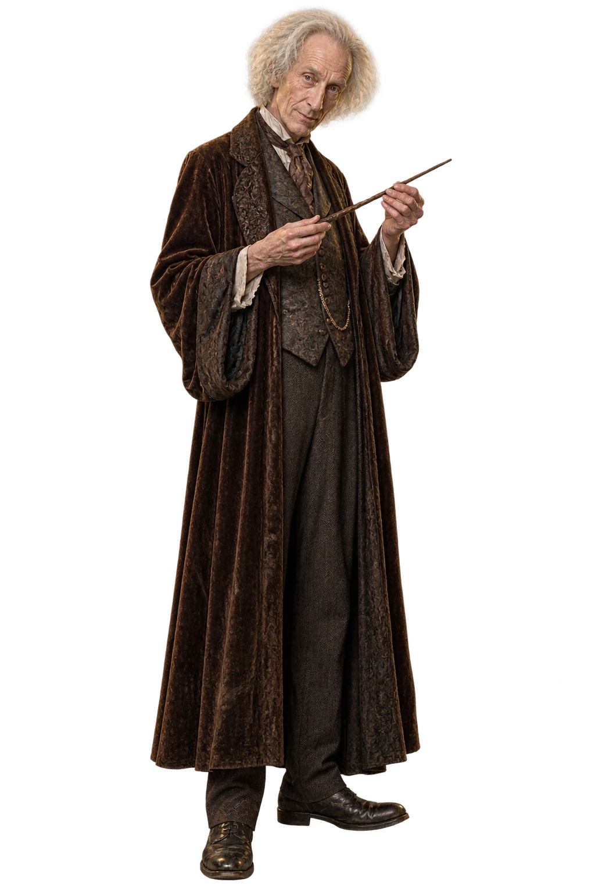

Londýn · kouzelnický svět
Děravý kotel
Za nenápadnými dveřmi hostince se skrývá cesta do kouzelnického světa.
Klikni na zářící body nebo použij přechody níže.


Londýn · kouzelnický svět
Za nenápadnými dveřmi hostince se skrývá cesta do kouzelnického světa.
✦ GRINGOTTOVA BANKA ✦
Ollivanderovi · výběr hůlky

Garrick Ollivander✦ Zvedni hůlku a mávni s ní ✦